| # | Notebook 'theme' | What it does... | Figure |
|---|---|---|---|
| 1 | 'Grib' files from WaveWatch3 | Retrieves a time series of wind [time, u, v] from the reanalysis model WW3 | |
| 2 | 'NetCDF' from ERA5 | Retrieves a time series of wave [time, height, period, direction] from the reanalysis by ERA5 | |
| 3 | Copernicus MOTU Client API | Uses API for download data (Wind) from Copernicus using 'MOTU Client' | |
| 4 | Copernicus Wind XARRAY | Deal with an '.nc' file from CMEMS with XARRAY, and retrieves a time series | |
| 5 | 'expver' problem! | Download data from CMEMS and deal with the 'expver' problem! | 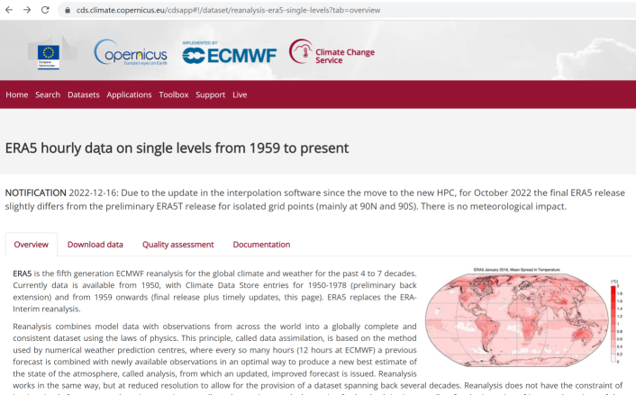 |
| 6 | FFT Espectrogram | Generates a wave signal and its spectrogram | |
| 6b | FFT Espectrogram | Spectrogram with real data! Currents and water level. | 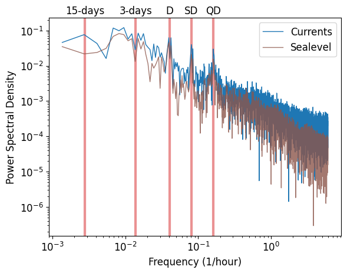 |
| 7 | Richardson Number / Law of the wall | Excercise to calculate the Richardson Number, creating vertical profiles of velocity and density | |
| 8 | Figure with multiple axes set manually | How to do a figure with multiple axes manually setting their positions | |
| 9 | Figure with multiple AXES set in a loop | About the same of the above, however in a smarter way! | |
| 10 | TS Diagram | TS Diagram with side/top histograms | |
| 11 | Base map from QGIS xyz-tiles | How to produce a geotiff in QGIS from xyz-tiles and use in Jupyter | 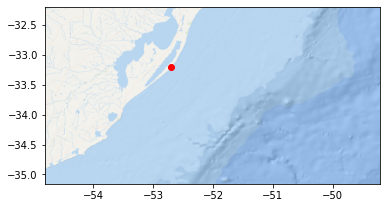 |
| 12 | Bathymetry map | Bathymetric data processing and generating a map (using Shapely.geometry) | 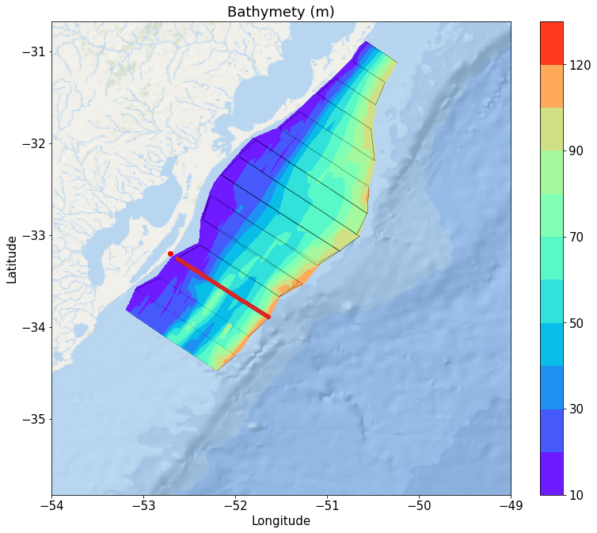 |
| 13 | Moored ADCP data processing | Data processing ADCP data recorded from a mooring (Nortek Aquadopp) | 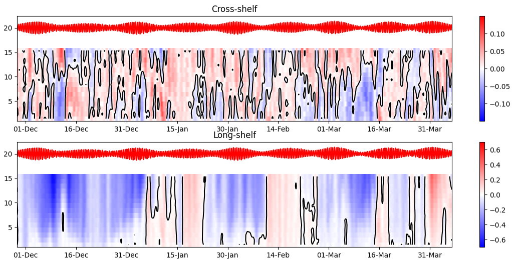 |
| 14 | Vessel mounted ADCP data processing | Data processing ADCP data recorded from a moving vessel survey (cross-section) | 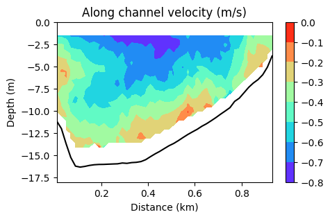 |
| 15 | Filling gaps | Find, size and fill small gaps in a time series | |
| 16 | Complex Demodulation / Hilbert Transform | Extract a time series of tidal amplitude from a sealevel time series | 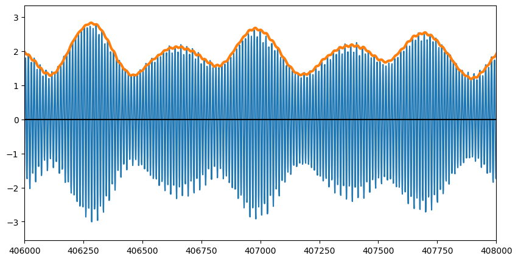 |
| 17 | Hidroweb Data Processing | Produces the flow climatology based on Hidroweb data base (for the Patos Lagoon) | 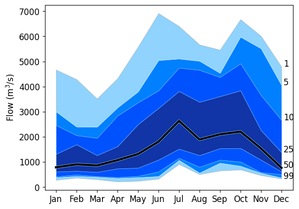 |
| 18 | Linear Regression | Linear Regression with a pretty plot! :-) | 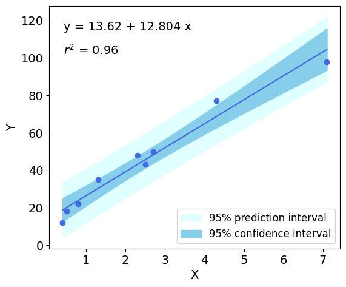 |
| 19 | CTD YoYo survey | Processing CTD/GPS for a YoYo fashion survey | 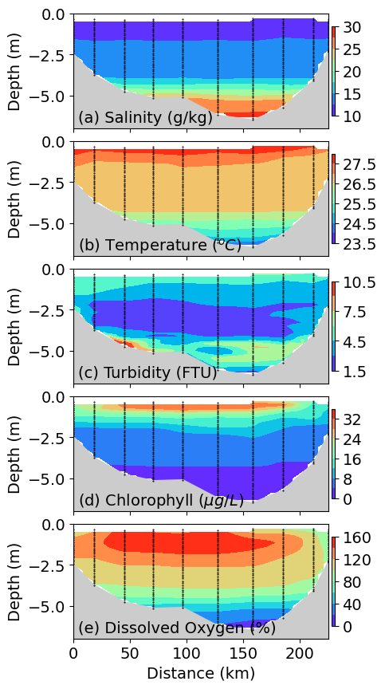 |
| 20 | Jupyter Ginput | Using Matplotlib Ginput in Jupyter | 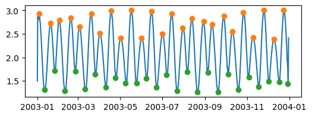 |